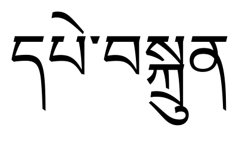
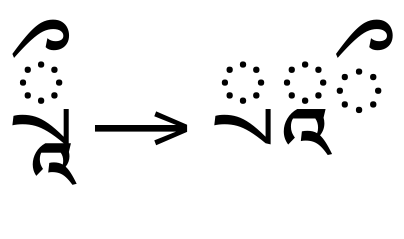
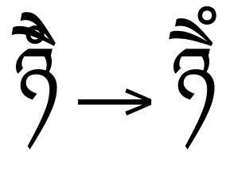
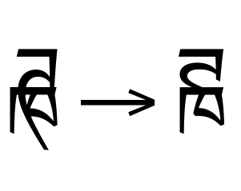
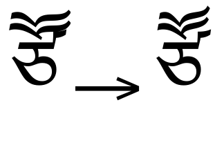
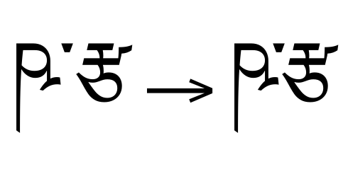
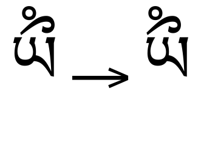
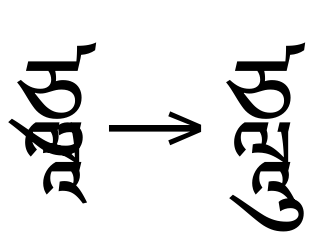
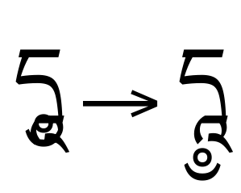

Tibetan shaping in OpenType¶
This document details the shaping procedure needed to display text runs in the Tibetan script.
Table of Contents
General information¶
The Tibetan script was modeled on seventh-century Indic scripts and incorporates several patterns and conventions found in Indic scripts. However, Tibetan developed independently and possesses enough major distinctions that it is inadvisable to attempt supporting it in a general-purpose Indic shaping engine.
The Tibetan script is used to write multiple languages, most commonly Tibetan, Dzongkha, Sikkimese, Ladakhi, and Balti. In addition, Sanskrit may be written in Tibetan, but the Tibetan script is not used for Vedic texts, therefore Tibetan text runs are not expected to include any glyphs from the Vedic Extensions block of Unicode.
The Tibetan script tag defined in OpenType is <tibt>.
Notably, Tibetan was originally included in version 1.0 of the Unicode standard, encoded in a block that closely mirrored the structure of the Indic scripts. However, this encoding for Tibetan was removed in Unicode 1.1. A new encoding for Tibetan was included in version 2.0 of the Unicode standard, more appropriately structured for the writing system.
Terminology¶
OpenType shaping uses a standard set of terms for Brahmi-derived and Indic scripts. The terms used colloquially in any particular language may vary, however, potentially causing confusion.
Matra is the standard term for a dependent vowel sign. Syllables in Tibetan script can include sequences of multiple vowels and, therefore, multiple matras. Each matra is either a above-base or a below-base form.
Several compound matra codepoints are included in the Tibetan Unicode block. However, these are only used when transcribing Sanskrit text. Otherwise, Tibetan syllables will include at most one matra.
Tsheng or tsek is the term for the small, dot-like mark that is placed between syllables in a Tibetan word. Sequences of tsek marks are occasionally used to justify lines of text within a block. For line-breaking purposes, words may be broken after a tsek mark.
Srog-med is the term for the “virama” or “halant” sign (U+0F84). However,
the Tibetan script does not natively use the srong-med mark: it is
used only when transcribing text in a language that requires a “halant”.
The term base consonant in Tibetan is analogous to its usage in Indic and Brahmi-derived scripts. The base consonant of a syllable is rendered in its full form; subsequent consonants are generally shown in subjoined form, stacked below the base consonant.
The Tibetan Unicode block includes separate codepoints for the base and subjoined forms of each consonant. Therefore, shaping engines are not required to determine the base consonant of a syllable algorithmically.
Tibetan also employs the term head consonant, which refers to the consonant in a stack that is in the visually topmost position. Certain consonants take on an alternate form when used in stack-initial positions (such as “Ra”). When the alternate form is visually the topmost consonant in the stack, it is regarded as the head consonant, even though the consonant that follows is regarded as the base consonant.
For example, the sequence “Ra,Subjoined Ka” (U+0F62,U+0F90) is
rendered with the “Ka” in its non-subjoined, base-consonant form and the “Ra”
positioned above. In this circumstance, the “Ra” would still be
regarded as the head consonant.
Where possible, using the standard terminology is preferred, as the use of a language-specific term necessitates choosing one language over all of the others that share a common script.
Glyph classification¶
Shaping Tibetan text depends on the shaping engine correctly classifying each glyph in the run. As with most other scripts, the classifications must distinguish between consonants, vowels (independent and dependent), numerals, punctuation, and various types of diacritical mark.
For most codepoints, the General Category property defined in the Unicode
standard is correct, but it is not sufficient to fully capture the
expected shaping behavior (such as glyph reordering). Therefore,
Tibetan glyphs must additionally be classified by how they are treated
when shaping a run of text.
Shaping classes and subclasses¶
The shaping classes listed in the tables that follow are defined so that they capture the positioning rules used by Tibetan script.
For most codepoints, the Shaping class is synonymous with the Indic Syllabic Category defined in Unicode. However, there are some
distinctions, where the defined category does not fully capture the
behavior of the character in the shaping process.
Several of the diacritic and syllable-modifying marks behave according
to their own rules and, thus, have a special class. These include
BINDU and VISARGA. Some less-common marks behave according to
rules that are similar to these common marks, and are therefore
classified with the corresponding common mark.
Letters generally fall into the classes CONSONANT,
VOWEL_INDEPENDENT, and VOWEL_DEPENDENT. These classes help the
shaping engine parse and identify key positions in a syllable. For
example, Unicode categorizes dependent vowels as Mark [Mn], but the
shaping engine must be able to distinguish between dependent vowels
and diacritical marks (which are categorized as Mark [Mn]).
Tibetan uses two subclasses of consonant, CONSONANT_SUBJOINED and
CONSONANT_HEAD.
The CONSONANT_SUBJOINED subclass is used for consonants immediately
following the base consonant of a syllable and before the vowel
sound. Unlike most Indic scripts, Tibetan explicitly encodes the
subjoined forms of each consonant in a separate codepoint. Therefore,
the shaping engine is not responsible for identifying the base and
below-base consonants (or other special forms) and fonts are not
responsible for implementing substitution features to substitute
subjoined forms in context.
The CONSONANT_HEAD subclass is used for special transliteration
letters that are not found in the Tibetan language. They should pass
checks for consonants, but do not evoke special shaping behavior.
Other characters, such as symbols, need no special attention from the shaping engine, so they are not assigned a shaping class.
Numbers are classified as NUMBER, even though they evoke no special
behavior from the Indic shaping rules, because there are OpenType features that
might affect how the respective glyphs are drawn, such as tnum,
which specifies the usage of tabular-width numerals, and sups, which
replaces the default glyphs with superscript variants.
Marks, subjoined consonants, and dependent vowels are further labeled with a mark-placement subclass, which indicates where the glyph will be placed with respect to the base character to which it is attached. The actual position of the glyphs is determined by the lookups found in the font’s GPOS table.
There are two basic mark-placement subclasses for dependent vowel signs (matras). Each corresponds to the visual position of the matra with respect to the base consonant to which it is attached:
TOP_POSITIONmatras are positioned above the base consonant.BOTTOM_POSITIONmatras are positioned below the base consonant.
Syllable modifiers and other marks may be placed in TOP or BOTTOM
position, or:
LEFT_POSITIONmarks are positioned to the left of the base consonant.RIGHT_POSITIONmarks are positioned to the right of the base consonant.
These positions may also be referred to elsewhere in shaping documents as:
Above-base
Below-base
Pre-base
Post-base
respectively. The LEFT, RIGHT, TOP, and BOTTOM designations
corresponds to Unicode’s preferred terminology. The Pre, Post,
Above, and Below terminology is used in the official descriptions
of OpenType GSUB and GPOS features. Shaping engines may, internally,
use whichever terminology is preferred.
For most mark and dependent-vowel codepoints, the mark-placement
subclass is synonymous with the Indic Positional Category defined
in Unicode. However, there are some distinctions, where the defined
category does not fully capture the behavior of the character in the
shaping process.
Tibetan character tables¶
Separate character tables are provided for the Tibetan block as well
as for other miscellaneous characters that are used in <tibt> text
runs:
The tables list each codepoint along with its Unicode general category, its shaping class, and its mark-placement subclass. The codepoint’s Unicode name and an example glyph are also provided.
For example:
Codepoint |
Unicode category |
Shaping class |
Mark-placement subclass |
Glyph |
|---|---|---|---|---|
|
Letter |
CONSONANT |
null |
ཀ Ka |
|
Mark [Mn] |
BINDU |
TOP_POSITION |
ཾ Sign Rjes Su Nga Ro |
Codepoints with no assigned meaning are designated as unassigned in the Unicode category column.
Assigned codepoints with a null in the Shaping class column evoke no special behavior from the shaping engine.
The Mark-placement subclass column indicates mark-placement positioning for codepoints in the Mark category. Assigned, non-mark codepoints have a null in this column and evoke no special mark-placement behavior. Marks tagged with [Mn] in the Unicode category column are categorized as non-spacing; marks tagged with [Mc] are categorized as spacing-combining.
Some codepoints in the tables use a Shaping class that differs from the codepoint’s Unicode General Category. The Shaping class takes precedence during OpenType shaping, as it captures more specific, script-aware behavior.
Other important characters that may be encountered when shaping runs
of Tibetan text include the dotted-circle placeholder (U+25CC),
the no-break space (U+00A0), and the zero-width space (U+200B).
The dotted-circle placeholder is frequently used when displaying a dependent vowel (matra) or a combining mark in isolation. Real-world text syllables may also use other characters, such as hyphens or dashes, in a similar placeholder fashion; shaping engines should cope with this situation gracefully.
The no-break space is primarily used to insert spaces between phrases. Tibetan text does not employ inter-word spaces. Consequently, when spaces are inserted into a text run, it is important that they be preserved: line-breaking algorithms must not break lines after a Tibetan space, so the no-break space character is used instead of the traditional space.
The no-break space may also be used to display those codepoints that are defined as non-spacing (marks, dependent vowels (matras), below-base consonant forms, and post-base consonant forms) in an isolated context, as an alternative to displaying them superimposed on the dotted-circle placeholder.
The Wheel of Dharma symbol (U+2638) from the Miscellaneous Symbols
block also occurs in Tibetan texts.
The <tibt> shaping model¶
Processing a run of <tibt> text involves three top-level stages:
Applying the language substitution features from GSUB
Applying all basic substitution features from GSUB
Applying all remaining positioning features from GPOS
As with other Brahmi-derived and Indic scripts, the basic substitution features must be applied to the run in a specific order. The positioning features in the final stage, however, do not have a mandatory order.
Unlike many other Brahmi-derived and Indic scripts, shaping Tibetan text does not require a syllable-identification stage nor any reordering moves.
A syllable in Tibetan is usually separated from subsequent syllables or words by a “tsheng” mark at the end of the syllable. A word-final syllable may also be separated by a punctuation mark or a non-breaking space.
Each syllable contains exactly one vowel sound. Valid syllables may begin with either a consonant or an independent vowel.
The general form of a consonant-based syllable in Tibetan begins with an optional pre-base consonant (also called a “prefix”), followed by the syllable’s base consonant, zero or more subjoined consonants, zero or more dependent-vowel signs (matras), an optional post-base consonant (also called a “suffix”) and zero or more syllable modifiers or diacritical marks.

The prefix, suffix, and base consonants will all be from the
CONSONANT shaping class. All subjoined consonants will be from the
CONSONANT_SUBJOINED class.
The prefix, suffix, and base consonant are all shown in their default form and position. Any subjoined consonants are stacked below the base consonant. Any dependent vowel signs (matras) are rendered as marks positioned either above the base consonant or below the consonant stack.
Note: A base consonant that is not accompanied by a dependent vowel sign (matra) carries the script’s inherent vowel sound. This vowel sound is changed by a dependent vowel sign following the consonant.
Note: Prefix and suffix consonants do not carry a vowel sound. This does not affect shaping, except in that Tibetan differs from many other scripts in not employing a “halant” or vowel-killer sign to designate the suppression of these sounds.
Certain consonant sequences may take on alternate shapes to provide a better visual fit with adjoining characters (such as within a consonant stack). However, these alternates are not considered orthographically distinct forms.
Native words in Tibetan do not incorporate more than a single dependent-vowel sign (matra) in a syllable. However, multiple dependent-vowel signs may be used to represent loanwords from Sanskrit, Chinese, and many other languages.
In addition to valid syllables, standalone sequences may occur, such as when an isolated codepoint is shown in example text.
Note: Foreign loanwords, when written in the Tibetan script, may not adhere to the syllable-formation rules described above.
1: Applying the language substitution features from GSUB¶
The language-substitution stage applies mandatory substitution features using the rules in the font’s GSUB table. In preparation for this stage, glyph sequences should be tagged for possible application of GSUB features.
The order in which these substitutions must be performed is fixed:
locl
ccmp
1.1 locl¶
The locl feature replaces default glyphs with any language-specific
variants, based on examining the language setting of the text run.
Note: Strictly speaking, the use of localized-form substitutions is not part of the shaping process, but of the localization process, and could take place at an earlier point while handling the text run. However, shaping engines are expected to complete the application of the
loclfeature before applying the subsequent GSUB substitutions in the following steps.
1.2: ccmp¶
The ccmp feature allows a font to substitute mark-and-base sequences
with a pre-composed glyph including the mark and the base, or to
substitute a single glyph into an equivalent decomposed sequence of glyphs.
In <tibt> text, this may include decompositions of multi-part
dependent vowel signs (matras).
The Tibetan Unicode block includes several multi-part matras, most intended for use transcribing Sanskrit. However, usage is discouraged for several of these matras, and two of the codepoints have been officially deprecated. In their place, text authors are encouraged to use the corresponding sequence of single-part matras.
U+0F77is deprecated and should be replaced by “U+0FB2,U+0F81”U+0F79is deprecated and should be replaced by “U+0FB3,U+0F81”U+0F73can be replaced by “U+0F71,U+0F72”U+0F75can be replaced by “U+0F71,U+0F74”U+0F81can be replaced by “U+0F71,U+0F80”
If present, these composition and decomposition substitutions must be
performed before applying any other GSUB lookups, because
those lookups may be written to match only the ccmp-substituted
glyphs.

2: Applying all basic substitution features from GSUB¶
In this stage, the basic substitution features from the GSUB table are applied. The order in which these features are applied is not canonical; they should be applied in the order in which they appear in the GSUB table in the font.
abvs
blws
calt
liga
The abvs feature replaces above-base-consonant glyphs with special
presentation forms. This usually includes contextual variants of
above-base marks or contextually appropriate mark-and-base ligatures.

The blws feature replaces below-base-consonant glyphs with special
presentation forms. In Tibetan, this can include contextual ligatures
involving below-base dependent vowel marks (matras) or subjoined
consonants.

The calt feature substitutes glyphs with contextual alternate
forms. In general, this involves replacing the default form of a
stacking glyph (such as a subjoined consonant) with an alternate that
provides a preferable connection to an adjacent glyph in the stack.
The calt feature performs substitutions that are not mandatory for
orthographic correctness. The substitutions made by calt
can be disabled by application-level user interfaces.

The liga feature substitutes standard, optional ligatures that are on
by default. Substitutions made by liga may be disabled by
application-level user interfaces.

3: Applying remaining positioning features from GPOS¶
In this stage, mark positioning, kerning, and other GPOS features are applied. As with the preceding stage, the order in which these features are applied is not canonical; they should be applied in the order in which they appear in the GPOS table in the font.
kern
abvm
blwm
mkmk
Note: The
kernfeature is usually applied at this stage, if it is present in the font. However,kernis not mandatory for shaping Tibetan text and may be disabled by user preference.
The kern feature adjusts the horizontal positioning of
glyphs.

The abvm feature positions above-base glyphs for attachment to base
characters. In Tibetan, this includes tone markers, diacritical marks,
and above-base dependent vowels (matras).

The blwm feature positions below-base glyphs for attachment to base
characters. In Tibetan, this includes subjoined consonants as well as
below-base dependent vowels (matras), and diacritical marks.

The mkmk feature positions marks with respect to preceding marks,
providing proper positioning for sequences of marks that attach to the
same base glyph. In Tibetan, this also includes attaching marks to
subjoined consonants or dependent vowels.
